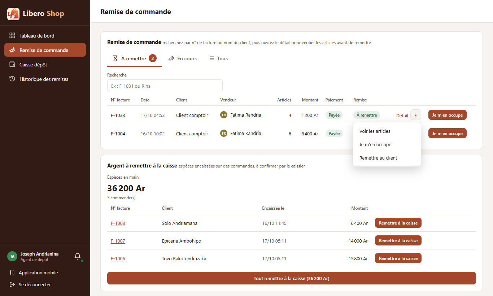
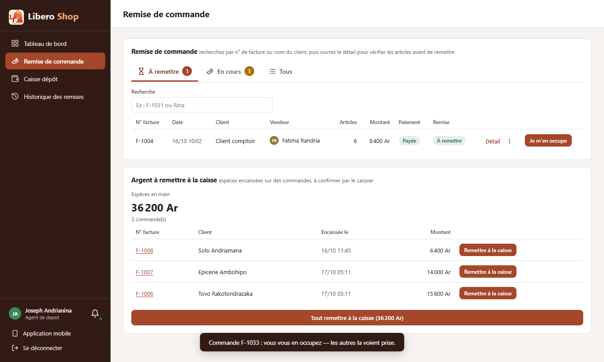

← Tous les comptes rendus de l'interface
UI-51« ⋮ » sur les lignes de factures
Résumé
- Chaque ligne de facture (tableau et cartes du téléphone) a un « ⋮ » à côté de « Détail ».
- Il propose « Voir les articles » puis exactement les actions de la fenêtre de détail : encaisser, prendre en charge, remettre, imprimer, annuler…
- Une action choisie s'exécute sans ouvrir le détail ; celles qui demandent quelque chose (moyen de paiement, motif d'annulation) ouvrent seulement leur petite fenêtre.
- Celles qui posaient une question au second appui (argent remis à la caisse) passent par la fenêtre de confirmation.
- Corrigé au passage : une erreur interne quand la commande quittait la liste pendant l'action.
1. Le problème
Pour imprimer une facture ou prendre une commande en charge, il fallait ouvrir son détail, puis appuyer sur le bouton. Les listes n'offraient qu'une action par ligne, choisie par l'écran.
2. Ce qui a été fait
Figure 1 — Une seule source de règles : le menu et le détail proposent toujours les mêmes actions.
Le menu lit les mêmes règles que le détail (rôle de la personne, état de la commande, réglages de la boutique) : ils ne peuvent pas se contredire. L'action choisie passe par le même déroulé que depuis le détail, puis la fenêtre se referme d'elle-même.
Corrigé : quand une action fait sortir la commande de la liste (prise en charge depuis « À remettre »),
la fenêtre se fermait avant la fin du traitement et l'application signalait une erreur interne dans la console. Le
message de confirmation s'affiche désormais normalement dans ce cas.
3. Le résultat en images
Joseph — agent de dépôt

Figure 2 — Le « ⋮ » de F-1033 : voir les articles, « Je m'en occupe », « Remettre au client ».

Figure 3 — « Je m'en occupe » choisi : fait sans ouvrir le détail, la commande passe « En cours ».
4. Tableau récapitulatif
| Fichier | Changement |
|---|---|
ui/…/core/orders/invoice-menu.ts | nouveau : entrées du menu à partir des actions du détail |
ui/…/shared/components/invoice-table.component.ts, ui/src/styles.scss | « ⋮ » sur chaque ligne et chaque carte |
ui/…/shared/components/invoice-detail-flow.component.ts | démarrage direct sur une action ; confirmation ; plus d'erreur si la commande quitte la liste |
| Règle | Test |
|---|---|
| Le détail d'abord, puis les actions du détail, l'annulation en rouge | invoice-menu.spec.ts |
| Sans action permise, « Voir les articles » reste | |
| Quelles actions pour qui et quand | invoice-actions.spec.ts (inchangé, réutilisé) |
Tests : interface au vert (309 tests). Aucun changement côté serveur.